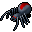
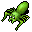
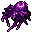
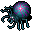
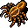

蜘蛛の召喚 Summon Spiders
英語版 CrawlWiki の記事「Summon Spiders」(0.32 向け、2026-07-06 版)の翻訳です。原文の著者は編集履歴をご覧ください。
この記事は 0.32 の時点の内容で、最新の 0.34 とは違うところがあるかもしれません。
| 一体以上の蜘蛛を召喚する。 |
蜘蛛の召喚はモンスター専用の呪文で、数匹の蜘蛛を呼び出す。呼び出される蜘蛛は次のとおり(割合は呪文パワー 144 の母蜘蛛の場合)[1]。
- s

背赤蜘蛛(25%) - s

飛びつき蜘蛛(25%) - s

巨大タランチュラ(19%) - s
 クリシボラ(13%)
クリシボラ(13%) - s

球体の蜘蛛(13%) - s

大喰い蜘蛛(18%)


母蜘蛛がこの呪文で呼び出した蜘蛛を同時に従えておけるのは 5 匹までだ。1 回の詠唱で呼び出すのは 1〜2 匹。
蜘蛛の召喚を唱える敵は次のとおり。

変更履歴
出典
- ↑ spl-summoning.cc:3095 (0.34.1)